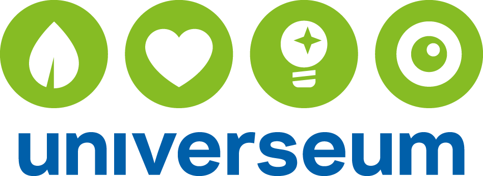
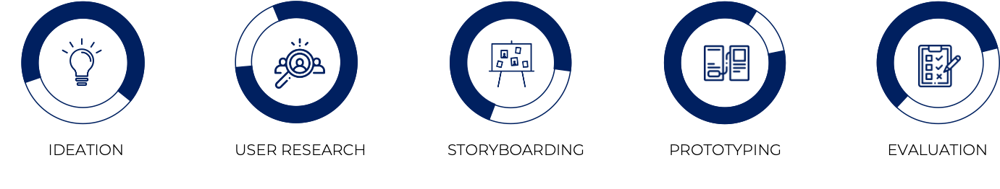
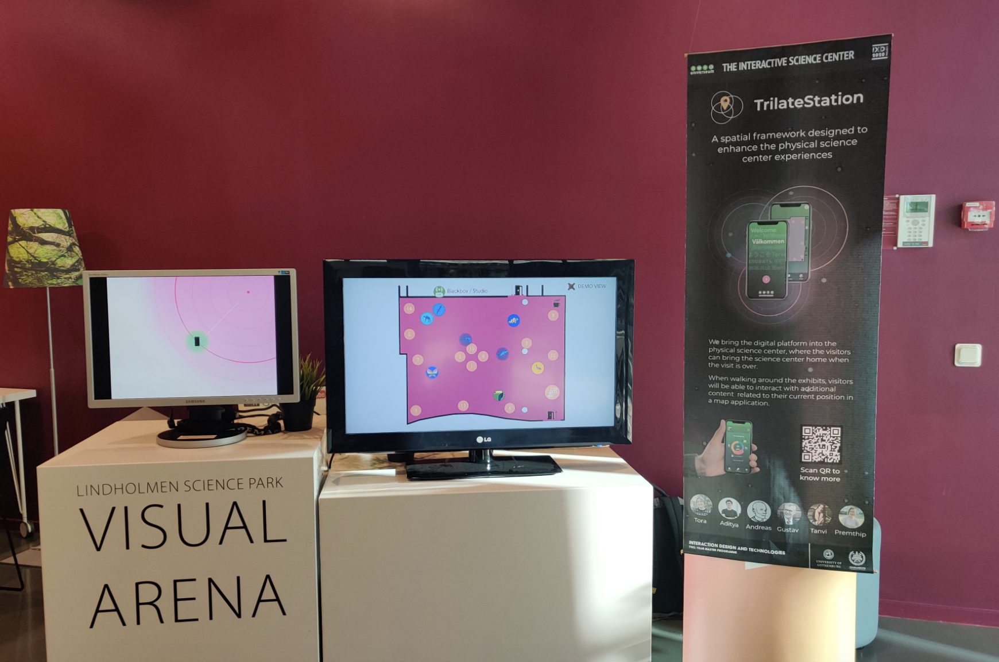

Projects
Android App for Science Center
Group Project | Duration : 8 weeksIn collaboration with
Design Goal: To design a spatially based interactive framework called TrilateStation
This project was done as a part of course Interaction Design Project by a group of 6 people including myself in collaboration with Universeum.
This project is intended to be implemented by science centers to allow visitors to access virtual material within the physical science center,
as well as after the visit is over. The result is a map-based application - TrilateStation, that utilizes indoor positioning technology and
bluetooth beacons to allow the visitors to walk up to digital points of interest. The project was presented at the 2020 Interaction Design Expo
(IDXPO) and highlights many interesting opportunities for physical-virtual transitions in science center design. The target group considered was
teenagers from age 12-16.
Methods
Tools
Design Process
Phase 1
Ideation
We began our project in ideation about different ways to teach teenagers about the technology they use every day.
Ideation methods such as Affinity Clustering and Crazy 8's were applied. We decided to proceed with a concept that
would teach teenagers about tracking technology.
After deciding to work with an application and use indoor tracking data, the idea was further refined to focus more on the interactive benefits
that could be derived from this concept; a phone application that utilizes indoor tracking could be used as the official exhibit map, and be used
to enhance the physical science center with additional content.
Phase 2
User Research
An initial exploratory research was performed with Universeum experts who work closely with our target group.
While the guides are not teenagers themselves, they do have a wealth of experience on what pitfalls to avoid,
what alterations has had what effects in the past etc. - making them a kind of self-taught expert on design
guidelines for science center exhibits.
Furthermore, there are several concerns about the fact that children in Sweden are losing interest in Science-Technology-Engineering-Mathematics (STEM)
subjects as they become older. As the target group is teenagers, it was thought to be the best to make use of phones as teenagers tend to use phones a lot
and this way science could be made more interesting to them.
Due to Covid-19 contraints, we couldn't actually interview teenagers in the initial phase.
Phase 3
Storyboarding
The Golden Path method was used to visualize the user journey and pain points that would need further work. This journey was
later translated to the storyboard used during initial evaluations.
Later on in the project, a more detailed storyboard was created to complement the application prototype. This way, it would be possible to explain the parts of the project
that we would not have enough time to implement. Teenagers have less sufficient reading skills, less sophisticated research strategies, and dramatically lower levels of patience.
A video prototype could help both the teenage target group, and additional stakeholders understand the concept in more detail. For the final, animated version of the storyboard was created.
Phase 4
Prototyping
To tie into the Universeum experience more seamlessly we decided to base the UI for our mockups on Universeum’s
native design system. Since the app’s primary focus is to enhance and augment the visit rather than deter from it,
we conceptualized a simple, three tab application. Each of the three tabs represent the three main functions of the application
which are : Map, How it works and Profile.
Furthermore, an Android app was created using the Kotlin language and the positioning features utilized an open source indoor positioning library by neXenio. The transmitter hardware was BLE beacons
from Radbeacon and Estimote broadcasting with the iBeacon protocol.
Phase 5
Evaluation
Three interview sessions with teenagers (two groups of four 15-year olds and one group with three 13-year olds) were conducted at the end of the project. The participants
were shown an animation about indoor tracking technology, and were walked through the UI mockups together with the interview conductor. The teenagers were then asked questions
about what they understood about the project, what expectations they had about using the app, and which types of activities they would like to find at the points of interest.
The main takeaways from the evaluation concerned the comprehensibility of the animation, as well as input on graphics regarding map design and color choices in the application. We were also encouraged by the participants to add more gamified
elements, such as high score lists, but were sadly not able to further explore this within the scope of the current project
Animated storyboard & Working App
The Exhibit
The exhibit was hosted physically at Visual Arena, Chalmers Lindholmen, and included live demos of the artifact, a poster and two displays: one with explanatory animation, one with an animated mockup of an expanded version of the map which displayed the movements of multiple fictional users. The framework was adapted to contain the project websites for the other installations. Visitors with an android phone could install the demo application and use it as they walked around the exhibit. For detailed photos of the exhibit setup. During the exhibit’s closed webinar hosted by IDXPO 2020, the group broadcasted a video presentation of the idea.

Ethical Considerations
One of the major ethical concerns in TrilateStation is the tracking process. As the indoor positioning system tracks visit locations of individuals, it could mean to invade their privacy. The Pew report found that only 9% of teens were "very" concerned about third parties like companies or government
agencies accessing their personal information. Thus, as a designer, one should make sure this is achieved. The challenge here was to make the teenagers understand what they are accepting or rejecting on the permission page when starting to use the TrilateStation app. Furthermore, a lot of privacy policy
and data sharing pages involve a lot of information which is something a teenager would ignore . Thus, it was made sure that in the TrilateStation app, this would be made quite easier to understand by the target group.
Furthermore, there is a great opportunity in this framework to provide more accessibility than the present. As this is a digital framework, it would allow Universeum to provide digital guided tours and language translations. This would
mean being more inclusive of visitors that don’t understand English and Swedish and visitors who are specially-abled can also have access to exhibits which aren’t designed for accessibility.
© Copyright © All rights reserved